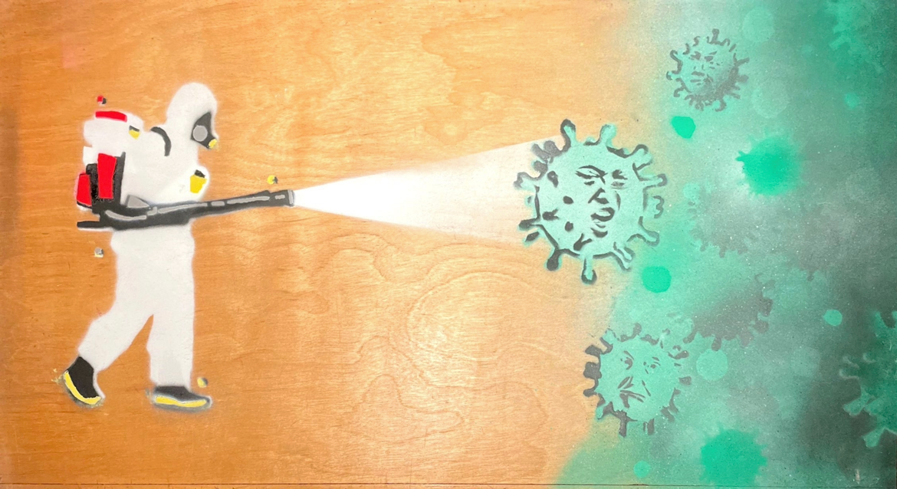
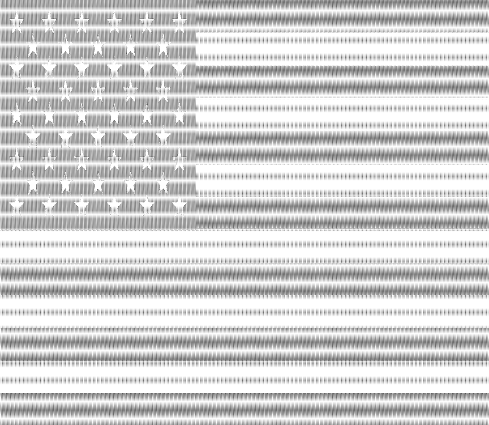

Skeleton 000001, 2021
Voxels
Voxel sculpture of skeleton.

Puddles 000001, 2021
Voxels
Voxel sculpture of duck.

Untitled, 2020
Spray paint on Maple
Cleansing the swap.
C.O.O.P.E.R, 2020
This is the description for Artwork 2. It should not go beyond the width of the image and will be displayed inside the white container with a shadow underneath.

Forgotten, 2021
Ascii
"Gone but not forgotten;" a common phrase referring to those who have past but are still remembered. Starting at 387072, the even larger number of Ascii characters represents the civilizen lives lost to the 20 year US war on terrorism from 2001 to 2021.
Details: HERE
Details: HERE